Conscious premium shoppers, via Nordstrom & Saks
INSEAD MBA · Identifying New Business Models · Session 03
Value Creation Analysis
Andre Calmon · Technology and Operations Management
16-19 June · deliverables
Where we are
Done
Tue 16
Generate
Sessions 01-02: myths, the idea factory, tournament launch
Last night: 20+ ideas, pick 5, submitted as A1
Registered on Torneio
You are here
Wed 17
Select
A2 · rate 75+ ideas, 0-10 · due 13:30
A3 · 60-second pitch + one PDF slide · upload by 16:30
A4 · multivote, in class · 10 teams of 4 form
Thu 18
Refine
A5 · Business Thesis + Value Creation Analysis · due 21:00
Customer discovery, live in class
Fri 19
Validate
A6 · peer review · due 8:30
A7 · concept + prototype pitch · due 8:30
Validated theses
02
Torneio debrief
How did it feel to generate at volume?
Turn to your neighbor: what surprised you about pushing past your first few ideas?
36of you generated
190ideas, overnight
~2,100peer ratings
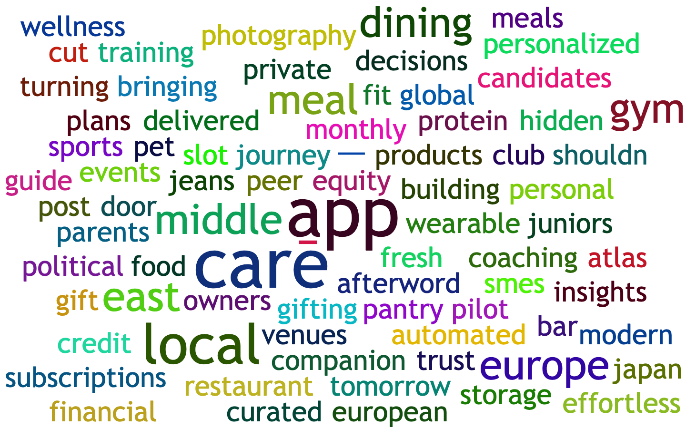
03
Torneio debrief · the scores
You are all creative, and statistically hard to tell apart.
190 ideas, rated by the class. The scores cluster so tightly that almost no one stands out from the average.
average peer score, 0-10
each row is one of you · dot = average, line = 95% interval · grey overlaps the class average (31 of you), dark clears it (5)
6.0/10average idea score (SD 0.64)
5.0 to 6.6where every student's average lands (SD 0.34)
31/36of you are statistically tied with the class average
~10%of a score traces to who wrote it; the other 90% is the idea and the room
So the edge this week is in what you do with an idea, not which idea you started with.
04
INBM pitch session
Pitch order
1-slide, 60-second pitch. Order randomized.
- 1 Nahl JABBAR
- 2 Mila SOLAJA
- 3 Karim GEMAYEL
- 4 Wagner DE OLIVEIRA FILHO
- 5 Johnny ABI RADI ABOU JAOUDEH
- 6 Raphael BARATA PASQUALETTE
- 7 Danica MALHOTRA
- 8 Thomas MULWA
- 9 Ziad HADDAD
- 10 Freddie CHAMBERS
- 11 Hiro KAJI
- 12 Karim ABOUCHAM
- 13 Gonzalo VEUTHEY MORDINI
- 14 Jayley CHAN
- 15 Alba WANG
- 16 Saurabh BHATIA
- 17 Jakub GEMBICKY
- 18 Karen SREIH
- 19 Alec CUTLER
- 20 Isabella ISOTTA
- 21 Jay CHOPRA
- 22 Arnav WALECHA
- 23 Parag RAHANGDALE
- 24 Karim HAFEZ
- 25 Oussama OBEID
- 26 Clara HERBERG FERNANDEZ
- 27 Aryaman SHAH
- 28 Leonardo BACCHETTA
- 29 Elsie HOUSTON
- 30 Miguel SANTOS ELIZALDE
- 31 Martin MATRAS
- 32 Lior ELKAYAM
- 33 David GREENWALD
- 34 Elie MELKI
- 35 Davide MONINA
- 36 Alice LIU
- 37 Zoé BARBIER-MUELLER
- 38 Anthonio CHOUCAIR
05
How a VCA works
Value Creation Analysis runs in six steps.
1
State the thesisCarry over your X·Y·Z from Session 2.
2
Map the modelMake it explicit on the Business Model Canvas.
3
Pick comparisonsAlternative models, the next-best option, adjacent industries.
4
Map differencesHow the model differs from each comparison, box by box.
5
Demand sideWhy buy this over the alternatives? What risks do customers face?
6
Profit + riskCan you deliver the promise profitably? Which risks to manage?
06
Step 1 · start from your thesis
X will buy Y because of Z.
Xthe customer you can name
Ythe solution
Zthe reason they buy
You framed this in Session 2. The VCA starts by restating it: a model is only worth analyzing once you know the thesis it has to deliver.
07
Step 2 · the raw material
Step 2 maps the model on the Business Model Canvas.
Key Partners
KP
Key Activities
KA
Key Resources
KR
Value Propositions
VP
Customer Relationships
CR
Channels
CH
Customer Segments
CS
Cost Structure
C$
Revenue Streams
R$
Upper right: the customer: who you serve and the value you promise.
Upper left: how you deliver that value, and who helps.
Bottom: the economics: costs and revenue.
Together: the central economic logic of the business.
Canvas structure: Strategyzer Business Model Canvas.
08
Click through the canvas
Nine blocks, nine sets of hypotheses.
Key Partners
KP
Key Activities
KA
Key Resources
KR
Value Propositions
VP
Customer Relationships
CR
Channels
CH
Customer Segments
CS
Cost Structure
C$
Revenue Streams
R$
Click or press → to step through. The current box turns green.
CS
Customer Segments
Who are your most important customers? What are their archetypes? What job do they want done?
VP
Value Propositions
What customer problems are you helping to solve? What needs are you satisfying?
CH
Channels
Through which channels (sales, distribution, support) do customers want to be reached?
CR
Customer Relationships
How will you get, keep, and grow customers?
KA
Key Activities
What key activities does the model require? Manufacturing, software development, a concierge service?
KR
Key Resources
What key resources do you need? Financial, physical, intellectual property, human?
KP
Key Partners
Who are your key partners and suppliers? What do you get from them, and what do you give back?
R$
Revenue Streams
How will you make money? What is the revenue model? What are the pricing tactics?
C$
Cost Structure
What are the most important costs? What is the mix of fixed and variable costs?
09
Step 2, revisited
Every box you just filled is a hypothesis.
Key Partners
KP
Key Activities
KA
Key Resources
KR
Value Propositions
VP
Customer Relationships
CR
Channels
CH
Customer Segments
CS
Cost Structure
C$
Revenue Streams
R$
10
The canvas, applied
OpenAI
Frontier intelligence, sold as a product (ChatGPT) and as infrastructure (the API).
Key Partners
KP
Microsoft / Azure (primary cloud)
AWS, Oracle, Stargate (compute)
NVIDIA, AMD, Broadcom (chips)
SIs, ISVs, data & safety partners
Key Activities
KA
Frontier model R&D
Safety & alignment
Product engineering: ChatGPT, API, Codex
Compute operations
Enterprise go-to-market
Key Resources
KR
Model IP, weights & safety stack
Elite research & engineering talent
Scaled compute capacity
ChatGPT brand & global user base
Capital + PBC structure
Value Propositions
VP
Frontier intelligence on demand
Productivity for knowledge work
A platform to embed AI: API, fine-tuning, agents
Enterprise-ready: privacy, SOC 2, admin
Broad access: free to enterprise
Customer Relationships
CR
Self-serve freemium, product-led
Subscriptions with usage limits
Enterprise sales, AI advisors, SLAs
Trust: privacy & compliance
GPT / app ecosystem
Channels
CH
ChatGPT apps (web, iOS, Android)
The OpenAI API platform
Direct enterprise sales
Cloud channels: Azure, Bedrock, OCI
Integrations: M365, Slack, GitHub
Customer Segments
CS
Consumers, students, creators
Developers & startups
SMBs & teams
Large & regulated enterprises
Education, nonprofits, public sector
Cost Structure
C$
Training compute (lumpy, capital-heavy)
Inference (scales with usage)
Top research & engineering talent
Data licensing, annotation & evals
Safety, security & compliance
Revenue Streams
R$
ChatGPT subscriptions: Plus, Pro, Business
Enterprise, Edu & Healthcare contracts
Usage-based API: tokens, tools, fine-tuning
Codex plans
Cloud-channel revenue
Strategyzer canvas, filled from public information (2026). A causal map, not a financial model.
11
The canvas, applied
NVIDIA
The full-stack AI-infrastructure platform. FY26 revenue $215.9B, up 65% year on year.
Key Partners
KP
Foundry: TSMC, Samsung
Memory: SK Hynix, Micron (HBM)
CoWoS packaging ecosystem
Contract mfg: Foxconn, Wistron
CSPs, OEMs, ODMs, AIBs, SIs
Key Activities
KA
Design GPUs, CPUs, DPUs, networking, systems
Build CUDA, NIM, NeMo, Omniverse, DRIVE
Yearly platform cadence (Blackwell to Rubin)
Secure supply, manage yields
Developer evangelism: GTC, DLI
Key Resources
KR
GPU architecture + CUDA platform (IP)
Full stack: Grace CPU, NVLink, DGX/HGX
Software: AI Enterprise, NIM, Omniverse
~7.5M+ CUDA developers
~42,000 staff (~31k in R&D)
Value Propositions
VP
End-to-end AI infrastructure: train + inference
Full stack: chips + systems + networking + software
More performance, lower cost vs CPU-only
The data-center AI factory
Gaming & pro-viz (RTX), automotive (DRIVE)
Customer Relationships
CR
High-touch: hyperscalers, CSPs, OEMs
Solution architects, co-design, roadmaps
Developer-led: CUDA, GTC, DLI, Inception
Enterprise subscriptions, support, warranties
Sticky via the CUDA installed base
Channels
CH
Direct sales: CSPs, OEMs, enterprises
Server channels: Dell, HPE, Lenovo, Supermicro
AIBs, distributors, retail (GeForce, RTX)
Cloud + DGX Cloud
developer.nvidia.com, GeForce NOW
Customer Segments
CS
Hyperscalers building AI factories
AI labs, neoclouds, sovereign AI
Enterprises: health, finance, telecom, mfg
Gamers, creators, PC OEMs
Pro-viz; automotive, robotics, embedded
Cost Structure
C$
Cost of revenue: wafers, HBM, CoWoS, assembly
R&D ~$18.5B (FY26)
SG&A ~$4.6B
Non-cancellable capacity commitments
Legal, IP, export-control, compliance
Revenue Streams
R$
Product sales: GPUs, systems, networking, SoCs
Data Center $193.7B (~90% of FY26)
Gaming $16.0B
Pro Viz $3.2B; Automotive $2.3B
Software/services: AI Enterprise, DGX Cloud
Strategyzer canvas, from NVIDIA FY2026 10-K and Q1 FY2027 results.
12
The worked example
Run the VCA
on Soko.
A Kenyan jewelry company that connects ~1,000 artisan workshops to premium fashion retailers. shopsoko.com
13

Soko sells artisan-made jewelry to premium fashion buyers.
Designs by Soko, made by independent Kenyan artisans, sold through premium retailers like Nordstrom and Anthropologie.
Ella PeinovichSoko founder · later founded Powered by People
14
The problem Soko addresses
Artisan craft is the developing world's second-largest employer, and one of its most marginalized.
Limited to local sales, millions of talented artisans are trapped in micro-economies, unable to earn enough to support their families and businesses.
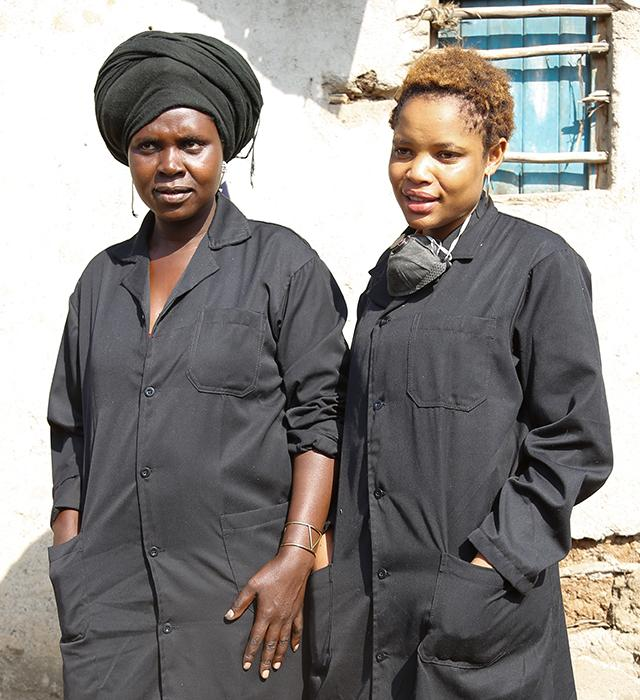
What to make
No exposure to fashion trends or competitive designs.
Product quality
Little knowledge of international quality standards.
Market access
Out of reach of global buyers and demand.
Finance & capital
No bank accounts to accept international payments.
15
Soko · the artisans behind the jewelry
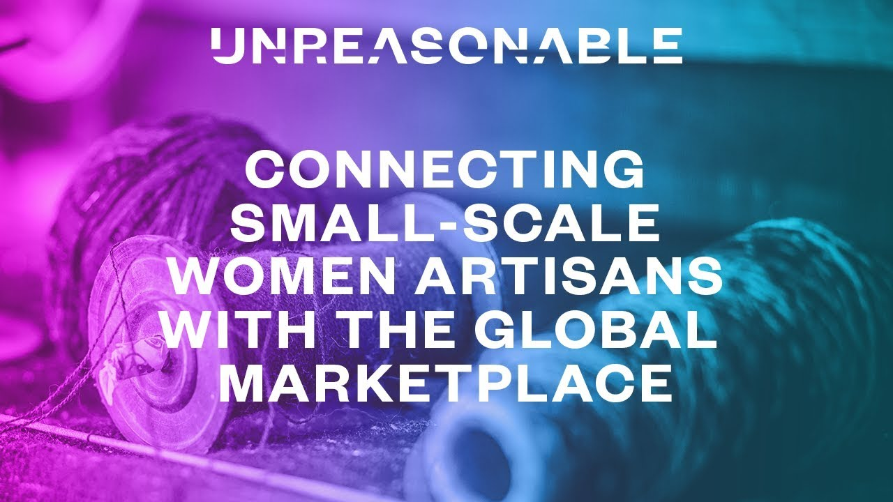
Click to watch on YouTube · youtube.com/watch?v=ygFrJ0EjVgE
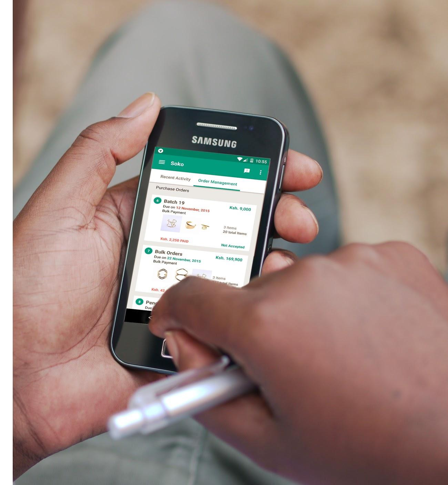
A basic phone becomes the factory floor.
Soko's cloud factory (what the company calls its "virtual factory") coordinates 1,000+ artisans in real time through mobile technology, with no factory of its own.
Mobile tech · distributed production17
Where Soko operates
Soko's network is rooted in greater Nairobi.
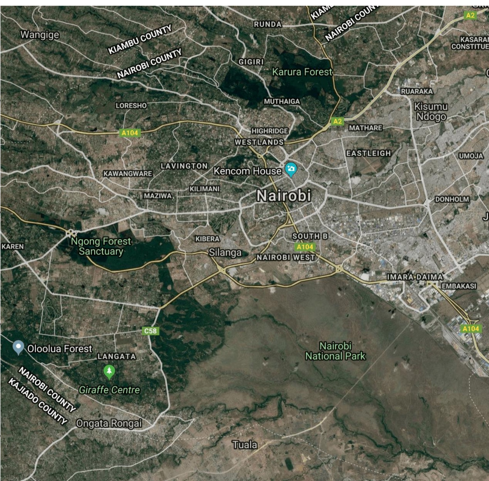
≈1,000
artisan workshops
spread across greater Nairobi, coordinated from Soko's field office.
18
Soko's operating model
Artisans feed Soko; Soko feeds premium retailers.
Artisans
≈ 1,000 artisan workshops
Soko
- Designs dozens of pieces each season around new trends
- Sources a few materials; does final assembly + QC
- Trains artisans and gives them feedback
Clients
Premium fashion retailers · 80% wholesale, 20% online · multi-week lead times
Who buys
NordstromAnthropologieFossilMichael StarsZadyReformationHolt Renfrew
19
Some supply-side activities
Soko runs design, quality control, and artisan training itself.
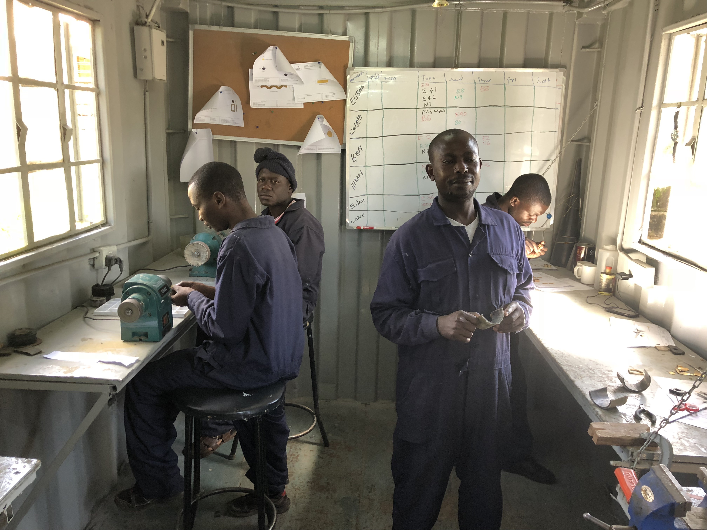
Raise capability across distributed producers.
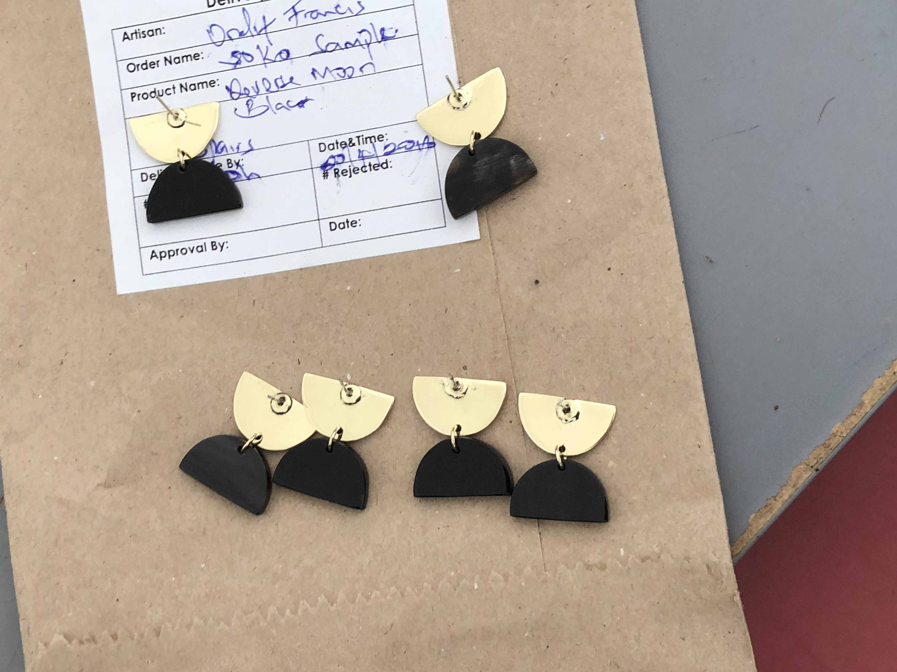
Turn variable output into retail-grade reliability.
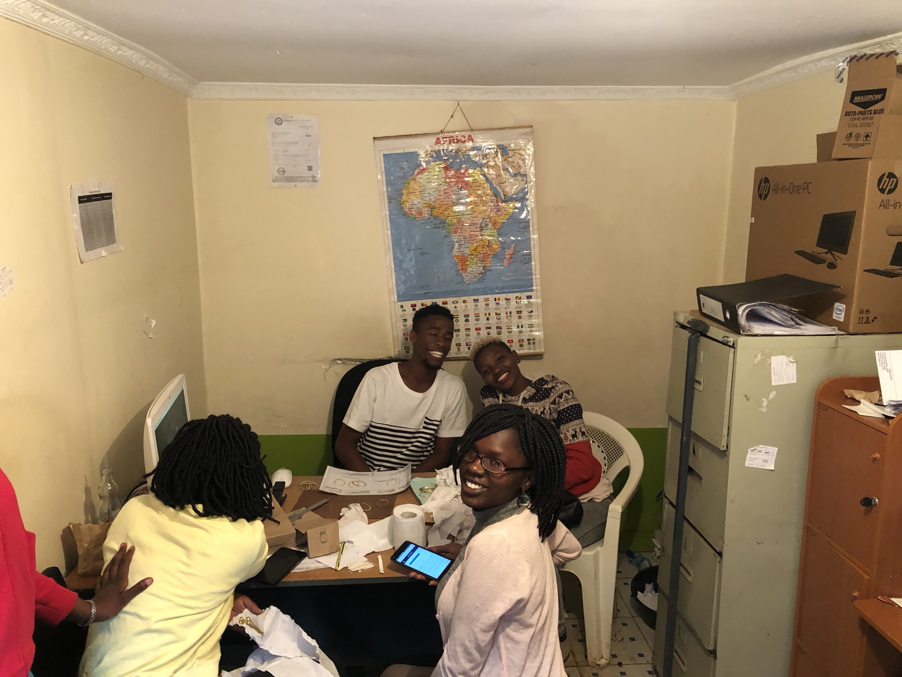
Build capacity, give feedback, coordinate orders.
20
Soko's cloud factory trades control for flexibility and low setup cost.
Cloud factory
Traditional factory
Flexibility
High
Low
Initial set-up costs
Low
High
Quality
Variable
Predictable
Capacity availability
Best-effort
In control
Training / tooling costs
High
Low-medium
Role of people
Entrepreneurs
Workers
21
What the cloud factory changes
It puts Nairobi artisans on Nordstrom's shelves.
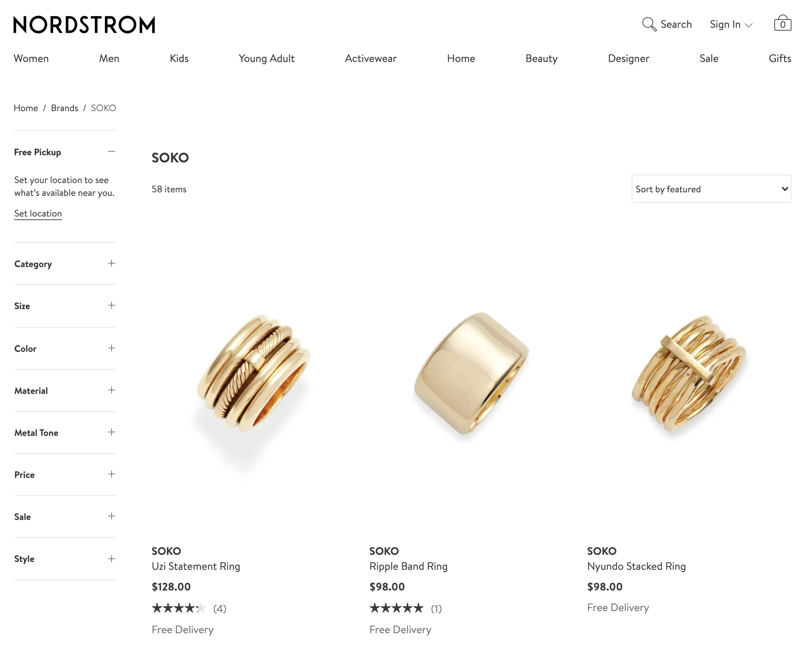
The cloud factory produces retail-ready jewelry for premium buyers like Nordstrom, not one-off pieces sold one artisan at a time.
22
Now, on Soko
Run the same six steps on Soko.
1
State the thesisSoko's X·Y·Z, for buyers and artisans.
2
Map the modelSoko's filled Business Model Canvas.
3
Pick comparisonsEtsy, Pandora, high-end jewelry.
4
Map differencesSoko vs. Etsy, box by box.
5
Demand sideWhy choose Soko? What risks remain?
6
Profit + riskMargins, customer risk, and other risks.
23
VCA step1/6
State the business thesis: Soko
X will buy Y because of Z.
X
Y
Z
Demandbuyers
Who
What they get
Ethically made, well-designed artisan jewelry
Why they choose Soko
Status and design, plus a credible social mission
Supplyartisans
Who
Skilled Kenyan artisans
What they get
Global retail access, training, steady orders
Why they choose Soko
Higher, steadier income than local markets
A two-sided thesis: Soko only wins if it wins both sides at once.
24
Business Model Canvas
VCA step2/6Key Partners
KP
Key Activities
KA
Key Resources
KR
Value Propositions
VP
Customer Relationships
CR
Channels
CH
Customer Segments
CS
Cost Structure
C$
Revenue Streams
R$
25
VCA step2/6
Map the model: Soko's canvas
Soko is a two-sided platform: it must win customers and artisans.
Key Partners
Artisans
Retailers
Designers
IT providers
Raw materials
KP
Key Activities
Jewelry design
Sales to retailers
Artisan recruitment + training
Final assembly
App maintenance
KA
Key Resources
Design ethos
Trend forecasting
Qualified artisans
KR
Value Propositions
For customers: status, design, ethical purchasing, newness
For artisans: higher-paying market access, risk reduction, new knowledge and skills
VP
Customer Relationships
Transactional
Push toward long-term via social media
CR
Channels
Premium retailers (e.g. Nordstrom)
Online store
CH
Customer Segments
Niche market
Two-sided: customers and artisans
CS
Cost Structure
Cost- and value-driven: high value at low production cost
Training, payment per piece, app + IT, quality, design
C$
Revenue Streams
Sales to premium retailers
R$
26
VCA step3/6
Pick points of comparison
Choose comparisons that make the differences visible.
Etsy
Alternative model
Etsy, and artisans on Etsy
A pure marketplace where artisans sell their own designs directly.
PANDORA
Lower-cost jewelry
Affordable branded jewelry
A different promise, cost base, and brand logic at scale.
Tiffany & Co.
Premium category
High-end jewelry
The benchmark for brand, trust, and retail experience.
27
Map Differences
VCA step4/6Key Partners
KP
Key Activities
KA
Key Resources
KR
Value Propositions
VP
Customer Relationships
CR
Channels
CH
Customer Segments
CS
Cost Structure
C$
Revenue Streams
R$
28
VCA step4/6
Map differences: Soko vs. Etsy
Key Partners
Both depend on artisans.
Payment providers matter more for Etsy.
Payment providers matter more for Etsy.
KP
Key Activities
Soko designs and trains.
Etsy focuses on platform management.
Etsy focuses on platform management.
KA
Key Resources
The sales platform is critical for Etsy; less so for Soko.
KR
Value Propositions
Both sell "unique."
Soko delivers more guided value to artisans, and a more focused social mission.
Soko delivers more guided value to artisans, and a more focused social mission.
VP
Customer Relationships
Etsy works repeated purchases and returning sellers.
CR
Channels
Soko focuses on premium retailers. Etsy is the pure marketplace.
CH
Customer Segments
Etsy is broader.
Artisans sell their own designs directly.
Artisans sell their own designs directly.
CS
Cost Structure
Website maintenance and design are major costs for Etsy compared to Soko.
C$
Revenue Streams
Etsy: listing fees + commissions. Soko: commission on sold items.
R$
29
VCA step5/6
Demand-side analysis
Why would a customer choose Soko over the alternatives?
Reasons to buy
Better design Does curated design beat marketplace variety?
In-store experience Do premium retailers add trust and discovery?
Social mission Does ethical purchasing raise willingness to pay?
Risks for the customer
Quality-price tradeoff Will artisan-made feel premium enough?
Impact credibility Is Soko actually creating positive social impact?
30
VCA step6/6
Profitability and risk
Can Soko deliver the promise profitably?
- Low-cost manufacturing in KenyaThe key to high margins, if quality and coordination hold.
- Skilled artisansSkill lowers quality costs, provided training and feedback work.
- Cheap shippingShipping economics matter because the model sells globally.
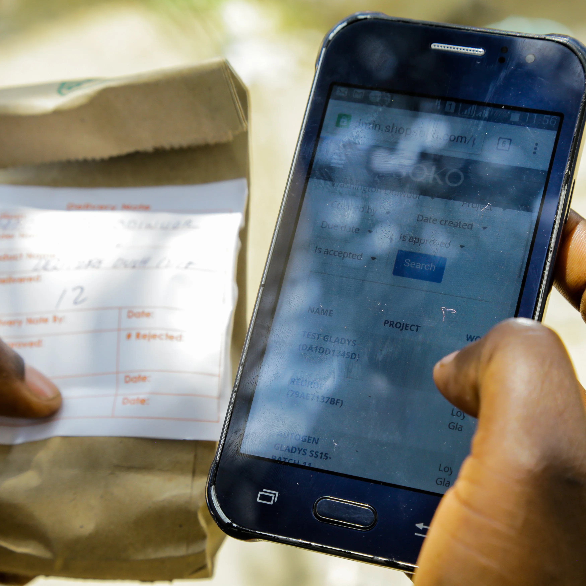
31
VCA step6/6
Profitability and risk
How does the model manage the customer's risk?
BCorp
Certify the social impact
B Corp certification and auditing make the mission credible.
Saks Fifth Avenue
Borrow trust from retailers
Selling through well-known partners gives customers confidence.
↺
Offer customer returns
A returns policy makes the purchase feel reversible, not risky.
32
VCA step6/6
Profitability and risk
Other risks can break the model even when demand exists.
Artisan retention
Distributed capacity walks away if the economics or relationships weaken.
Political
instability
instability
Political instability
Shocks to the local context can disrupt supply and trust.
COVID · shipping · FX
Other shocks
External shocks change production, shipping, demand, or financing.
33
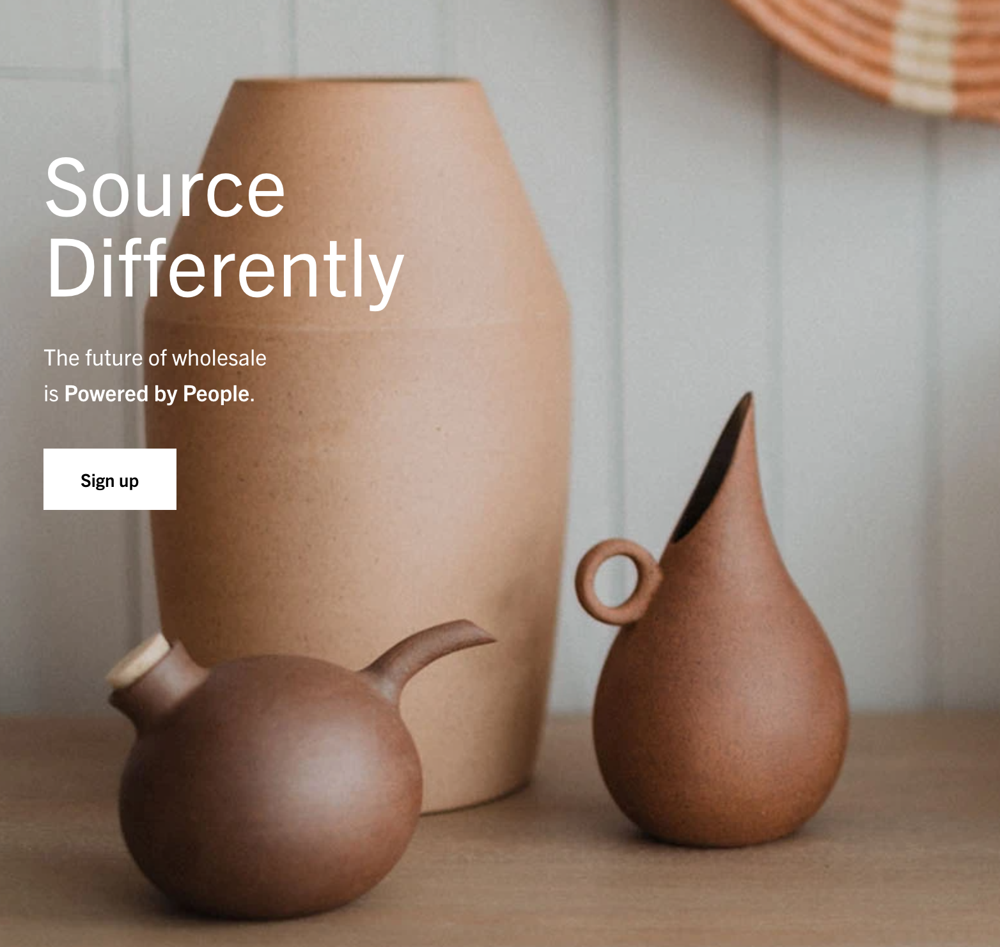
Soko's playbook became its own company: Powered by People.
Ella Peinovich left Soko's operations to found Powered by People: IT platforms and tools for cloud factories like Soko, and an Etsy-style marketplace for premium retailers to source socially impactful products.
poweredbypeople.com34
A VCA is not a forecast.
It is a disciplined argument about where value is created, who captures it, and which risks must be managed.
Limitations
What a Value Creation Analysis won't tell you.
It oversimplifies
The canvas hides detail by design.
No time dynamics
It does not show how the model evolves over time.
No cashflow detail
It is not detailed accounting or cashflow analysis.
Limited brand view
Brand value can dominate yet sit outside the boxes.
Limited competitive view
It can miss the broader competition.
Limited sales view
Ease of sales often needs separate analysis.
36
Wrapping up
Two next things.
1
Build your team's VCA
Write your business thesis (X will buy Y because of Z), run a Value Creation Analysis, and flag your 3 riskiest hypotheses. One submission per team. We dig into riskiest hypotheses tomorrow.
A5 · due Thu 21:00
2
Stress-test with another team
Pair with your matched team for a 1-hour peer review: share your VCA, challenge each other's riskiest assumptions, then swap. Leave with an updated canvas. Match assignments to follow.
A6 · due Fri 8:30
Before you leave: set a time to meet your team tomorrow and start the VCA.
Thursday we work on experimentation plans. Friday you present a customer-discovery and experimentation plan, built on your VCA and the peer feedback.
37
Let's start experimenting.
Lock your team time tonight · andre.calmon@insead.edu